교통기사 (2012-03-04 기출문제)
1과목: 교통계획
1. 다음에서 가정기반통행(home-based trip)의 통행량은?
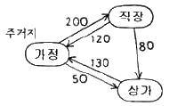
- 250 통행
- 320 통행
- 500 통행
- 580 통행
(정답률: 85%)

2. 통행희망노선도(Trarric Desire Lines)는 다음 중 어느 조사결과에 의하여 작성될 수 있는가?
- 회전 교통량 조사
- 가로구간 교통량 조사
- 0 – D 조사
- 승하차 인원수 조사
(정답률: 86%)
3. 사람통행 실태조사의 결과를 검증하거나 보완하고 교통량 추세 분석, 통행배정을 위해 실시하는 것으로, 한 지역을 가로지르는 가상적인 선과 교차하는 모든 도로상에서의 통행량을 측정하는 조사는?
- 폐쇄선조사
- 스크린라인조사
- 가구통행실태조사
- 기⋅종점조사
(정답률: 100%)
4. 통행발생(Trip Generation) 단계에서 사용하는 회귀 분석 모형에 대한 설명으로 옳지 않은 것은?
- 모형의 적합도를 판단할 수 있는 결정계수(R2)가 1에 가까울수록 좋은 회귀모형이라 할 수 있다.
- 모든 독립변수들은 서로 독립적이며 변수 간의 상관관계가 높을수록 좋은 모형이다.
- 너무 많은 독립변수를 사용한 회귀모형은 통계적 관점에서 적절하지 않을 수도 있다.
- 통행발생량을 예측하는데 사용되는 독립변수의 예로 가구수, 자동차 보유대수를 들 수 있다.
(정답률: 100%)
5. 다음 중 통행배정(Trip Assignment)의 목적으로 옳지 않은 것은?
- 현재와 장래의 교통문제 진단
- 교통망 대안의 평가
- 교통시설 건설의 우선순위 판단자료
- 교통수단 선택모형의 지표로 활용
(정답률: 72%)
6. 수단분담률이 교통수단의 특성에 따라 통행자가 선택하는 것이 아니라 사회⋅경제적 변수에 따라 선택 패턴이 결정된다는 전제에서 출발하여 대중교통서비스율이 낮고 혼잡이 적은 단기예측에 유리한 것은?
- 통행단모형
- UMODEL형
- UMTA모형
- 통행교차모형
(정답률: 100%)
7. 다음 중 개별형태모형에 대한 설명으로 옳지 않은 것은?
- 행태성이 강한 모형이므로 공간적⋅시간적으로 영향을 받지 않아 범용적으로 적용이 가능하다.
- 자료 수집 비용이 많이 드나 정밀한 교통수요 추정에 가장 좋은 모형이다.
- 단기적 교통정책의 영향을 쉽게 추정할 수 있다.
- 교통존에 구애를 받지 않고 모형의 적용이 가능하다.
(정답률: 71%)
8. 다음 중 사용자 균형 통행배정 기법(user equilibrium assignment model)에 대한 설명으로 옳지 않은 것은?
- 모든 통행자는 각각의 노선에 배정된 균형상태에서 자신의 경로를 바꾸어 통행시간을 개선할 수 있다.
- 출발지와 목적지가 같을 경우 모든 선택된 통행경로에 대한 통행시간은 동일하다.
- 통행자들은 자신의 통행시간을 최소화하는 통행경로를 선택한다는 개념에서 출발하였다.
- 새로운 링크의 추가적인 건설에도 불구하고 총 통행시간이 증가하는 역설적인 결과가 나타나기도 한다.
(정답률: 82%)
9. 현재의 존간 통행량이 아래와 같을 때 균일성장률법을 이용하여 장래의 존별 통행량을 구한 값이 옳은 것은? (단, tij 는 장래의 존 i와 j간의 통행량을 뜻한다.)
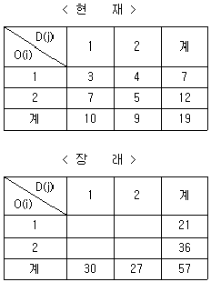
- t11 = 9, t12 = 12, t21 = 21, t22 = 15
- t11 = 10, t12 = 11, t21 = 20, t22 = 16
- t11 = 11, t12 = 10, t21 = 19, t22 = 17
- t11 = 12, t12 = 9, t21 = 18, t22 = 18
(정답률: 89%)
10. 다음 중 교통정온화 기법에 이용되는 것으로 차량 통행 도로의 선형을 지그재그형태로 하여 차량의 주행 속도를 저감시키는 것을 무엇이라 하는가?
- 시케인(chicane)
- 과속방지턱(hump)
- 초커(chocker)
- 폴트(fort)
(정답률: 92%)
11. 교통비용과 교통량의 관계를 나타내는 수요곡선이 그림과 같을 때 기존 시설에 의한 교통비용은 C1, 교통량은 Q1이고 교통시설을 개선한 후의 교통비용은 C2, 교통량이 Q2일 때 소비자 잉여(Consumer's Surplus)의 증가분은? (단, 보기의 빗금 친 부분이 소비자 잉여의 증가분을 말한다.)
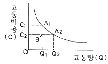
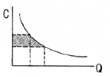
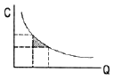
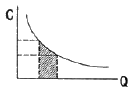
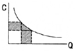
(정답률: 94%)
12. 다음 중 격자형 노선망에 비해 방사형 대중교통 노선망(Radial Transit Line)이 갖는 단점으로 옳은 것은?
- 노선의 도심 집중으로 교통혼잡을 야기할 수 있다.
- 잦은 환승으로 인한 승객의 불편과 대기시간의 증가를 가져온다.
- 노선망이 복잡하여 이용자에게 혼란을 초래한다.
- 외곽으로부터 도심까지의 통행거리가 상대적으로 길다.
(정답률: 92%)
13. 교통계획사업평가의 경제성 분석기법 중 하나로, 편익과 비용의 현재가치의 합이 같아지는 할인율이 사회적 기회비용보다 높으면 사업의 수익성이 있다고 보는 지표는?
- B/C
- IRR
- FYBCR
- NPV
(정답률: 67%)
14. 도보시간과 대기시간을 포함하는 승객접근비용과 운영자 비용의 함수가 아래와 같을 때, 총 비용을 최소화시키는 적정 버스 정류장 간격은? (단, x 는 정류장수/km 이다.)
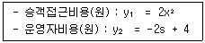
- 1000m
- 750m
- 500m
- 250m
(정답률: 59%)
15. 다음 중 4단계 수요추정모형의 통행분포(TripDistribution)단계에서 사용하는 모형은?
- 중력모형
- 카테고리분석법
- 용량제약법
- 전량배분모형
(정답률: 89%)
16. 다음 중 일반적인 도시교통의 특성으로 옳지 않은 것은?
- 대량수송을 필요로 한다.
- 도심과 같은 특정지역에 통행이 집중된다.
- 도시 내 각 지점(출발지와 목적지)을 연결해 주는 장거리 교통이 대부분이다.
- 통행로, 교통수단, 터미널 등에 의해서 승객에게 서비스를 제공한다.
(정답률: 100%)
17. 다음 중 TSM기법의 특징으로 옳은 것은?
- 고투자 비용
- 장기적인 편익 추구
- 거시적인 기법
- 기존 시설의 활용
(정답률: 86%)
18. 어느 버스의 차량당 재차인원이 60명, 차량의 용량이 45명일 때 혼잡률은 얼마인가?
- 약 42%
- 약 62%
- 약 75%
- 약 133%
(정답률: 95%)
19. 다음 중 일방통행제의 장⋅단점으로 옳지 않은 것은?
- 총 통행거리 증대
- 정면충돌사고 감소
- 상충교통류 증가
- 우회경로 확보 필요
(정답률: 96%)
20. 다음 중 교통존의 설정 기준으로 옳지 않은 것은?
- 각 존은 가급적 동질적인 토지이용이 포함되도록 한다.
- 행정구역과 가급적 일치시킨다.
- 간선도로가 가급적 존 경계와 일치하도록 한다.
- 각 존의 크기는 인구밀도에 비례하여 변화한다.
(정답률: 87%)
2과목: 교통공학
21. 이동차량법(moving vehicle method)에 의한 한 도로의 일방향의 통행시간조사에서 조사차량의 평균통행시간은 3.5분이었다. 조사 중 평균 2대의 차량이 조사차량을 추월하였으며 조사차량이 평균 1.5대의 차량을 추월하였다. 조사방향의 교통량이 1200대/시간 일때 조사차량과 동일한 진행 방향에서의 차량의 평균통행시간은 약 얼마인가?
- 2.42분
- 3.48분
- 4.52분
- 5.58분
(정답률: 78%)
22. 다음 중 도로의 용량 결정에 영향을 미치는 도로조건으로 가장 거리가 먼 것은?
- 차로폭
- 도로의 경사
- 측방 여유폭
- 차로 표시 색상
(정답률: 88%)
23. 다음 중 도시부 간선도로(신호교차로로 구성)의 시공도(time-space diagram)로부터 일반적으로 확인할 수 없는 사항은?
- 차량진행대폭(bandwidth)
- 차량통행시간(travel time)
- 옵셋(offset)
- 개별 차량의 자유속도(free-flow speed)
(정답률: 86%)
24. 어느 교차로의 한 접근로에서 포화교통량이 1800대/h, 접근 교통량이 350대/h, 유효 녹색 신호 시간이 30초, 신호주기가 150초 일 때 이 접근로의 v/c의 비는?
- 0.67
- 0.77
- 0.87
- 0.97
(정답률: 48%)
25. 다음 중 차량추종이론(car-following)에 관한 설명으로 가장 거리가 먼 것은?
- 반응시간은 운전자의 민감도에 의해 결정된다.
- 고속도로에서 후미차량이 앞 차량과 유사한 움직임을 보이는 것을 설명하는데 활용될 수 있다.
- 민감도가 지나치게 크면 교통류의 불안요소가 커지는 것이 일반적이다.
- 추종이론은 거시적 관점에서 차량의 움직임을 설명하는 교통류 이론이다.
(정답률: 95%)
26. 다음 중 교통량 조사방법에 해당하지 않는 것은?
- 기계적 조사법
- 주행 산정법
- 수동적 조사법
- 델파이법
(정답률: 85%)
27. 다음 교통류의 속도-밀도 모형 중 Greenberg에 의해 설명된 것으로, 최대밀도를 정확히 산출할 수 있고 조사자료와 대체로 일치하지만 밀도가 낮은 경우 속도를 정확하게 산출하기 어려운 단점이 있는 모형은?
- 로그모형
- 직선모형
- 종형모형
- 에디모형
(정답률: 95%)
28. 도로 전방의 복잡한 상황을 운전자에게 분명하게 전달하고 적절한 주행 동작을 통해 안전하게 통행할 수 있도록 속도와 진행방향을 선택하여 필요한 안전조치를 효과적으로 취하는데 필요한 거리를 무엇이라 하는가?
- 정지시거(stopping sight distance)
- 추월시거(passing sight distance)
- 판단시거(decision sight distance)
- 교차로시거(crossing sight distance)
(정답률: 95%)
29. 다음 중 신호교차로의 이상적 조건 기준으로 옳지 않은 것은?
- 3.5m 이상의 차로폭
- 교통류는 모두 승용차로 구성
- 접근부 정지선의 상류부 75m 이내에 버스정류장이 없음
- 경사가 없는 접근부
(정답률: 80%)
30. 다음 중 접근지체(approach delay)를 구성하는 요소로 분류되지 않는 지체는?
- 정지지체(stopped delay)
- 가속지체(acceleration delay)
- 감속지체(deceleration delay)
- 대기행렬지체(queue delay)
(정답률: 89%)
31. 다음 중 신호연동을 산정하기 위한 시공도의 작성에서 반드시 필요한 요소가 아닌 것은?
- 차량속도
- 신호시간
- 교차로간격
- 차량길이
(정답률: 77%)
32. 다음의 설명 중 옳지 않은 것은?
- 밀도가 0 이면 교통류율도 0 이다.
- 임계밀도에서 교통류율은 최대값에 이른다.
- 밀도가 증가하면 평균 속도는 감소한다.
- 임계밀도에서 속도는 최대값이다.
(정답률: 85%)
33. 다음 중 정주기 신호제어(Pre-timed Control)의 개념으로 옳지 않은 것은?
- 하루 중 신호시간 계획을 하나 또는 여러 개를 정한다.
- 차량검지기에 의하여 파악된 교통량에 대응하는 신호시간을 신호주기마다 결정한다.
- 일정한 신호시간으로 운영되어 인접신호등과의 연동이 편리하다.
- 사전에 준비된 현시 수 및 순서에 의해 신호제어전략을 정한다.
(정답률: 91%)
34. 신호교차로에서 횡단보도의 길이가 33m, 황색시간은 3초, 보행속도는 1.1m/초, 그리고 보행자들이 횡단을 시작하려 할 때 지체되는 시간은 2초라면 횡단을 위한 최소 녹색신호시간은 얼마인가?
- 20초
- 24초
- 29초
- 35초
(정답률: 72%)
35. 편도 2차로 도로의 교통량의 합이 2400대/시간인 경우 평균차두간격(headway)은 얼마인가?
- 1초
- 2초
- 3초
- 4초
(정답률: 91%)
36. 3km의 도로구간을 주행한 차량 3대의 주행속도와 시간이 아래와 같을 때, 3대의 공간평균속도는 얼마인가?
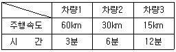
- 25.7km
- 28.3km
- 33.5km
- 35.0km
(정답률: 79%)
37. 평균 교통량이 10대/분이고 차량 도착 확률이 포아송분포를 따른다고 할 때, 30초 동안 2대가 도착할 확률은 얼마인가?
- 0.3%
- 7.6%
- 8.4%
- 14.4%
(정답률: 73%)
38. 다음 중 대기행렬이론에서의 단일 서비스기관에 대한 설명으로 옳지 않은 것은?
- 시스템 내의 평균차량대수는 서비스를 받고 있는 평균차량대수의 값과 같다.
- 평균대기행렬 길이는 시스템 내의 평균차량대수에서 서비스를 받고 있는 차량의 평균대수를 뺀 값이다.
- 시스템 내에 차량이 한 대도 없을 확률은(1-교통강도)(traffic intensity 또는 이용계수)와 같다.
- 시스템 내의 평균체류시간은 평균대기시간에서 평균 서비스 시간을 합한 값과 같다.
(정답률: 92%)
39. 다음 중 교통류(traffic flow)의 특성을 나타내는 기본요소로 가장 거리가 먼 것은?
- 차두시간 및 차간시간
- 차량가속도
- 속도 및 통행시간
- 밀도
(정답률: 87%)
40. 주기가 같은 인접한 두 개의 교차로를 연동시키려고 한다. 두 교차로 간의 거리가 400m이고 연동속도는 50km/h 일 때 필요한 옵셋(offset)은? (단, 두 교차로 모두 녹색신호 시작 때 대기차량은 없다.)
- 10초
- 28.8초
- 72.2초
- 125초
(정답률: 67%)
3과목: 교통시설
41. 다음은 어떤 형식의 좌회전연결로를 나타낸 것인가?
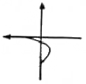
- 준직결식(semi-direct)
- 직접연결식(direct)
- 루푸식(loop)
- 4분원식(one quadrant)
(정답률: 77%)
42. 다음 중 승용차의 좌⋅우회전 교통량이 비교적 많거나 교차로에서의 시거가 제한되어 있는 경우, 특히 버스가 좌회전할 때 좋은 버스정거장의 위치는?
- 원측정거장(far-side stop)
- 근측정거장(near-side stop)
- 블록중간정거장(midblock stop)
- 논스톱정거장(non-stop)
(정답률: 65%)
43. 다음 중 도로 포장 속에 묻어서 차량이 통과함에 따라 변화하는 유도전류를 이용하는 검지기의 종류는?
- 압력반응 검지기
- 자기 검지기
- 충격 검지기
- 감응 루프식 검지기
(정답률: 70%)
44. 다음 중 설계속도가 70km/h 이상 80km/h 미만인 지방지역 일반도로의 차로 최소 폭 기준으로 옳은 것은?
- 2.75m 이상
- 3.00m 이상
- 3.25m 이상
- 3.50m 이상
(정답률: 90%)
45. 다음 중 2차로 도로의 이상적 조건으로 옳지 않은 것은?
- 설계속도 100km/h 이상
- 차로폭 3.5m 이상
- 측방여유폭 1.5m 이상
- 승용차로만 구성된 교통류
(정답률: 100%)
46. 설계속도가 60km/h인 도로의 최소 평면곡선반경은? (단, 편경사는 6%이고 횡방향 마찰계수는 0.12 이다.)
- 104.27m
- 114.21m
- 128.84m
- 157.48m
(정답률: 74%)
47. 다음 중 연결로를 전부 독립으로 하지 않고 2개이상으로 차도(통과차도 또는 연결로)를 부분적으로 겹쳐서 엇갈림을 수반하는 부분을 가진 형식으로서, 다섯 갈래 이상의 여러 갈래 교차에서 형성할 경우 교통동선이 많고 복잡해져 통상의 경우 시행되지 않는 인터체인지의 형태는?
- 준직결형
- 다이아몬드형
- 로타리형
- 트럼펫형
(정답률: 72%)
48. 다음 중 교통섬의 설치시 고려하여야 할 사항으로 옳지 않은 것은?
- 시야가 확보되지 않거나 곡선이 급한 지점에는 반드시 설치하여야 한다.
- 위험한 교통흐름을 제어하고 안전한 주행속도를 유지하도록 하여야 한다.
- 교통관제시설을 설치할 수 있는 적당한 크기의 공간을 확보하여야 한다.
- 교통흐름을 명확히 분리하여야 하나 설치횟수를 가급적 최소화하여야 한다.
(정답률: 67%)
49. 다음 중 차로수 균형의 원칙에 해당하지 않는 것은?
- 분류부 본선의 차로수는 분류 이후 차로수 합에서 1을 감한 값과 같아야 한다.
- 합류부 본선의 차로수는 합류 이전 차로수 합에서 1을 감한 값과 같거나, 혹은 합류 이전 차로수 합과 같아야 한다.
- 차로수의 감소는 한 번에 1차로보다 더 줄여서는 아니된다.
- 분류부 본선의 차로수는 분류 이후 차로수 합에서 1을 더한 값과 같아야 한다.
(정답률: 59%)
50. 다음 중 버스의 운행 정보가 아래와 같을 때, 최적 재차인원에 의한 버스 정류장의 적정 간격은?
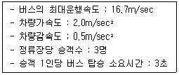
- 647.5m
- 747.5m
- 847.5m
- 947.5m
(정답률: 70%)
51. 다음 중 평면곡선과 종단경사의 조합에 대한 설명으로 옳지 않은 것은?
- 도로의 주요 구간과 연결로, 교차로 등 방향전환을 하는 곳에서 균형과 조화를 이루어 설치되어야 한다.
- 속도를 줄일 필요가 있으면서 평면곡선과 종단곡선이 연결되는 곳에는 평면곡선부를 내리막길에 설치하는 것이 좋다.
- 충분한 시거가 확보되도록 하여야 한다.
- 연결로의 끝부분에 곡선부가 설치되는 경우 모양이 눈에 잘 띄어야 하며 적절한 감속거리가 주어져야 한다.
(정답률: 100%)
52. 다음 중 운전자가 진행로상에 산재해 있는 예측 불가능한 위험요소를 발견하고 그 위험성을 판단하여, 적절한 속도와 진행방향을 선택하여 필요한 안전조치를 효과적으로 취하는데 필요한 거리에 해당하는 것은?
- 정지시거
- 추월시거
- 평면시거
- 피주시거
(정답률: 89%)
53. 다음 중 아래와 같은 특징을 갖는 주차수요 추정 방법은?
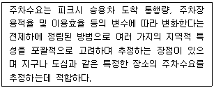
- 과거추세연장법
- 주차발생원단위법
- P요소법
- 누적주차수요추정법
(정답률: 100%)
54. 다음 중 노면의 종류에 따른 차도의 횡단경사 기준이 옳은 것은?
- 시멘트 포장도로 : 1.5% 이상 2.0% 이하
- 아스팔트 포장도로 : 2.0% 이상 3.0% 이하
- 간이포장도로 : 3.0% 이상 5.0% 이하
- 비포장도로 : 4.0% 이상 6.0% 이하
(정답률: 75%)
55. 다음 중 완화곡선으로 적합하지 않은 것은?
- 클로소이드 곡선
- 렘니스케이트 곡선
- 3차 포물선
- 2차 포물선
(정답률: 69%)
56. 용도별 연면적과 총 주차대수의 관계가 아래와 같을 때, 업무시설의 연면적이 5000m2이고 상업시설의 연면적이 1400m2인 건물의 총 주차대수는?
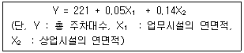
- 557대
- 667대
- 777대
- 887대
(정답률: 85%)
57. 다음 중 설계기준자동차의 종류별 최소 회전 반지름이 모두 옳은 것은?
- 소형자동차 : 6m, 대형자동차 : 12m, 세미트레일러 : 12m
- 소형자동차 : 6m, 대형자동차 : 10m, 세미트레일러 : 12m
- 소형자동차 : 7m, 대형자동차 : 12m, 세미트레일러 : 12m
- 소형자동차 : 7m, 대형자동차 : 10m, 세미트레일러 : 12m
(정답률: 77%)
58. 다음 중 측도에 대한 설명으로 옳지 않은 것은?
- 도로의 구조가 성토와 절토로 이루어져 본 도로와 고저차가 있어 자동차가 주변으로 출입이 불가능한 경우에 설치한다.
- 고속도로가 지방지역을 통과할 경우에는 교통의 분산이나 합류의 목적으로 측도를 설치하는 것이 바람직하다.
- 고속도로의 경우는 측도를 일방통행으로 운영하는 것이 토지이용의 효율을 높일 수 있다.
- 계획교통량이 비교적 많은 4차로 이상의 고속도로 또는 간선도로에서 필요에 따라 설치한다.
(정답률: 73%)
59. 다음 중 4지 인터체인지의 종류에 해당하지 않는 것은?
- 다이아몬드형 인터체인지
- 부분 클로바잎형 인터체인지
- 직접 연결형 인터체인지
- 트럼펫형 인터체인지
(정답률: 79%)
60. 다음 중 중앙버스전용차로의 장점으로 옳지 않은 것은?
- 버스의 속도를 제고하고 정시성의 확보가 가능하다.
- 버스 이용자의 증가를 기대할 수 있다.
- 일반 차량과의 마찰을 줄일 수 있다.
- 안전시설의 설치에 따른 비용의 부담이 없다.
(정답률: 86%)
4과목: 도시계획개론
61. 다음 중 하워드(E. Howard)가 제시한 전원도시의 조건에 해당하지 않는 것은?
- 시가지에는 충분한 오픈 스페이스를 확보한다.
- 토지는 원칙적으로 사유를 인정한다.
- 도시 주변에 식량의 자급자족을 위하여 넓은 농경지를 확보한다.
- 시민 경제를 유지할 수 있는 정도의 공업을 유치한다.
(정답률: 54%)
62. 다음 중 사회간접자본시설의 준공과 동시에 당해 시설의 소유권이 국가 또는 지방자치단체에 귀속되며 사업시행자에게 일정 기간의 시설관리 운영권을 인정하는 방식은?
- BOO(Build-Own-Operate)
- BOT(Build-Own-Transfer)
- BTO(Build-Transfer-Operate)
- BLT(Build-Lease-Transfer)
(정답률: 64%)
63. 다음 중 라이트(H. Wright)와 스타인(C. Stein)이 계획한 래드번(Radburn)계획에 대한 설명으로 옳지 않은 것은?
- 사람과 자동차의 효율적 운행에 의한 철저한 보차 공존주의를 지향한다.
- 격자형 도로의 불필요한 도로율 증가를 배제시켰다.
- 각 주택에는 보행자를 위한 현관과 차량이용 현관을 별도로 설치한다.
- 12~20ha 규모의 슈퍼블록(super block)을 채택하였다.
(정답률: 82%)
64. 다음 중 앙케이트를 반복 실시하여 여러 차례 의견을 수렴시켜 그 결과를 종합하여 미래의 예측에 접근하는 도시 조사 방법은?
- 적응계획(Adaptive planning)
- 델파이법(Delphi method)
- 잠재력 분석(SWOT Analysis)
- 배분적계획(Allocative planning)
(정답률: 77%)
65. 다음 중 도시계획시설로서의 보행자전용도로의 구조 및 설치기준에 대한 설명으로 옳지 않은 것은?
- 보행자전용도로와 주간선도로가 교차하는 곳에는 입체 교차시설을 설치하고 보행자우선구조로 한다.
- 필요시에는 보행자전용도로와 자전거도로를 함께 설치하여 보행과 자전거통행을 병행할 수 있도록 한다.
- 공공청사⋅문화시설 등이 보행자전용도로와 연접된 경우에는 이들 공간과 분리시켜 독립된 보행공간이 조성되도록 한다.
- 차도와 접하거나 해변⋅절벽 등 위험성이 있는 지역에 위치하는 경우에는 안전보호시설을 설치한다.
(정답률: 40%)
66. 다음 중 후크(Hook) 신도시가 지향한 4개의 목표요소에 해당하지 않는 것은?
- 보행자 우선 원칙의 도시
- 시가화 지역과 농촌 지역의 통합
- 주민의 요구를 충족하는 도시성(urbanity)
- 인구구성상의 균형
(정답률: 알수없음)
67. 다음 중 도시의 물리적 계획의 3대 구성요소에 해당하지 않는 것은?
- 밀도
- 동선
- 배치
- 인구
(정답률: 75%)
68. 다음 중 르네상스시대 도시계획의 특징과 가장 관계가 먼 것은?
- 비대칭성(asymmetry)
- 정형성(formalism)
- 축성(axiality)
- 개방성(openness)
(정답률: 84%)
69. 다음 중 아디케스(Adickes)법에 의하여 세계 최초로 환지 방식에 의한 도시개발사업을 실시한 나라는?
- 프랑스
- 독일
- 오스트리아
- 스위스
(정답률: 91%)
70. 다음 중 도시계획 과정에서의 주민참여에 대한 설명으로 옳지 않은 것은?
- 도시계획의 입안 및 집행에 지역주민이 직접⋅간접적으로 참여할 수 있다.
- 폐쇄적인 계획의 추진에서 발생하기 쉬운 오류와 저항을 사전에 예방할 수 있다.
- 주민참여는 개발에 의한 이익을 균등 배분하기 위함이다.
- 주민의 의사와 욕구를 개발목표에 맞추어 구체화시킴으로써 도시행정의 능률적인 수행을 도모할 수 있다.
(정답률: 58%)
71. 다음 중 주거지역의 도로율 기준으로 옳은 것은? (단, 도시계획시설의 결정⋅구조 및 설치기준에 관한 규칙에 따른다.)(오류 신고가 접수된 문제입니다. 반드시 정답과 해설을 확인하시기 바랍니다.)
- 10% 이상 15% 미만
- 10% 이상 20% 미만
- 20% 이상 30% 미만
- 25% 이상 35% 미만
(정답률: 67%)
72. 다음 중 아래와 같은 주장을 한 사람은?
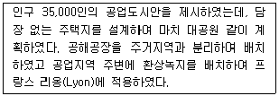
- Robert Owen
- Camillo Sitte
- R. Unwin
- Tony Garnier
(정답률: 79%)
73. 다음 중 토지이용에 따른 교통문제로 거리가 먼것은?
- 고층빌딩 건축에 따른 교통량 증가 문제
- 고층빌딩 건축에 따른 주차 수요 증가 문제
- 불합리한 신호체계의 운영으로 인한 문제
- 단일기능에 의한 야간 인구의 감소 문제
(정답률: 알수없음)
74. 다음 중 서구도시의 시대별 토지이용을 결정하는 주요요인의 연결이 옳지 않은 것은?
- 선사시대 – 공동체적 요인
- 고대 – 권력적 요인
- 중세 – 공동체적 요인
- 근세 – 권력적 요인
(정답률: 64%)
75. 다음 중 토지이용의 입지배분시 주거지역의 입지 조건으로 고려할 사항과 가장 거리가 먼 것은?
- 기반시설
- 접근성
- 지형조건
- 경제성
(정답률: 79%)
76. 다음 도시경제이론 중 과거 두 시점간의 국가경제, 지역경제, 산업구조를 분석하여 당해 지역의 어떤 산업이 건전하게 성장하는가 또는 성장할 것인가를 파악하는 방법은?
- 변이할당분석(Shift-Share Analysis)
- 경제기반이론(Econmic Base Theory)
- 지역성장모형(Regional Growth Theory)
- 투입산출분석(Input-Output Analysis)
(정답률: 93%)
77. 다음 중 부캐넌 보고서(Buchanan Report)에서 제안한 가로망체계에 해당하지 않는 것은?
- 보행자전용도로
- 주간선도로
- 보조간선도로
- 집산도로
(정답률: 72%)
78. 다음 중 국토의 계획 및 이용에 관한 법률상 도시 지역과 그 주변지역의 무질서한 시가화를 방지하고, 계획적⋅단계적인 개발을 도모할 필요가 있다고 인정되어 도시관리계획으로 결정하는 구역은?
- 개발제한구역
- 특정시설제한구역
- 시가화조정구역
- 지구단위계획구역
(정답률: 90%)
79. 다음 중 그리스의 도시인 밀레투스(Miletus)의 특징에 해당하지 않는 것은?
- 격자형 가로망의 개념이 도입되었다.
- 광장(Agora)은 남쪽과 북쪽에 두 개가 존재하였다.
- 도시 전체 지역을 도심⋅상업⋅종교지역으로 구분하였다.
- 하수도 시설이 미비하여 공중위생시설이 불량하였다.
(정답률: 79%)
80. 도시관리계획도서 중 계획도를 작성할 때 사용할 수 있는 지형도의 축척에 해당하지 않는 것은?
- 1 : 1000
- 1 : 5000
- 1 : 25000
- 1 : 50000
(정답률: 65%)
5과목: 교통관계법규
81. 다음 중 통행의 금지 및 제한에 관한 설명으로 옳지 않은 것은?
- 지방경찰청장은 도로에서의 위험을 방지하고 교통의 안전과 원활한 소통을 확보하기 위하여 필요하다고 인정하는 때에는 구간을 정하여 보행자나 차마의 통행을 금지하거나 제한할 수 있다.
- 관할구청장은 도로에서의 위험을 방지하고 교통의 안전과 원활한 소통을 확보하기 위하여 필요하다고 인정하는 때에는 보행자나 차마의 통행을 우선 금지하거나 제한한 후 그 도로관리자와 협의하여 금지 또는 제한의 대상과 구간 및 기간을 정하여 도로의 통행을 금지하거나 제한 할 수 있다.
- 경찰공무원은 도로의 파손, 화재의 발생이나 그 밖의 사정으로 인한 도로에서의 위험방지를 위하여 긴급한 필요가 있다고 인정하는 때에는 필요한 한도 안에서 보행자나 차마의 통행을 일시 금지하거나 제한할 수 있다.
- 지방경찰청장이 통행의 금지 또는 제한을 하고자 하는 때에는 행정안전부령이 정하는 바에 의하여 그 사실을 공고하여야 한다.
(정답률: 55%)
82. 다음 중 도로법에서 정의하는 도로에 해당하지 않는 것은?
- 가로수
- 지하통로
- 궤도
- 옹벽
(정답률: 74%)
83. 다음 중 도로교통법령상 이륜자동차의 적재용량은 그 승차장치의 길이 또는 적재장치의 길이에 몇 cm를 더한 길이를 운행상의 안전기준으로 하는가?
- 40cm
- 35cm
- 30cm
- 25cm
(정답률: 58%)
84. 다음 중 부설주차장의 총 주차대수 규모가 8대 이하인 자주식주차장(지평식에 한함)에서 주차단위구획과 접하여 있는 차로의 너비는 최소 얼마 이상으로 하여야 하는가? (단, 주차형식은 직각주차인 경우다.)
- 3.0m
- 3.5m
- 4.0m
- 6.0m
(정답률: 46%)
85. 다음 중 모든 차의 운전자가 서행하여야 하는 장소에 해당하지 않는 것은?
- 터널 내
- 교통정리가 행하여지고 있지 아니하는 교차로
- 도로가 구부러진 부근
- 가파른 비탈길의 내리막
(정답률: 72%)
86. 다음 중 도로의 구조⋅시설 기준에 관한 규칙에 의한 일반 도로의 기능별 구분 중 도로법상의 '군도'에 상응하는 것은?
- 주간선도로
- 보조간선도로
- 간선도로
- 국지도로
(정답률: 84%)
87. 다음 중 도로 구조의 손궤 방지, 미관 보존 또는 교통에 대한 위험을 방지하기 위하여 도로경계선으로부터 20m를 초과하지 아니하는 범위에서 대통령령이 정하는 바에 따라 지정하는 것은?
- 접도구역
- 연도구역
- 고속교통구역
- 자동차 전용구역
(정답률: 80%)
88. 다음 중 교차로 통행방법에 대한 설명으로 옳지 않은 것은?
- 자전거의 운전자는 교차로에서 좌회전하고자 하는 때에 미리 도로의 우측 가장자리로 붙어 서행하면서 교차로의 가장자리 부분을 이용하여 좌회전하여야 한다.
- 우회전을 하기 위하여 방향지시기로써 신호를 하는 차가 있는 경우 그 뒤 차의 운전자는 신호를 한 앞차의 진행을 방해하여서는 아니 된다.
- 교통정리가 행하여지고 있지 아니하고 일시정지 또는 안전표지가 설치되어 있는 교차로에 들어가고자 하는 때에는 일시정지하거나 양보하여 다른 차의 진행을 방해하여서는 아니 된다.
- 우선순위가 같은 차가 동시에 교통정리가 행하여지고 있지 아니하는 교차로에 들어가고자 하는 때에는 우측도로의 차에 진로를 양보하여야 한다.
(정답률: 34%)
89. 다음 중 노외주차장인 주차전용건축물의 건축 제한 기준으로 옳지 않은 것은?
- 건폐율 : 100분의 90 이하
- 용적률 : 1500% 이하
- 대지면적의 최소한도 : 45m2 이상
- 연면적 : 1만 제곱미터 이상
(정답률: 62%)
90. 다음 중 도시교통정비촉진법상 교통수단의 범위에 해당하지 않는 것은?
- 승용자동차
- 화물자동차
- 원동기장치자전거
- 특수자동차
(정답률: 81%)
91. 도로교통법상 모든 차의 운전자는 건널목의 가장자리 또는 횡단보도로부터 최대 얼마 이내인 곳에는 차를 정차 또는 주차시켜서는 아니 되는가?
- 3m
- 5m
- 10m
- 20m
(정답률: 69%)
92. 다음 중 도로교통법에 따른 안전거리의 확보 등에 관한 설명으로 옳지 않은 것은?
- 모든 차의 운전자는 같은 방향으로 가고 있는 앞차의 뒤를 따르는 때에는 앞차가 갑자기 정지하게 되는 경우 충돌을 피할 수 있는 필요한 거리를 확보하여야 한다.
- 모든 차의 운전자는 위험방지를 위한 경우가 아니면 차를 갑자기 정지시키거나 속도를 줄여서는 아니된다.
- 모든 차의 운전자는 차의 진로를 변경하고자 하는 경우에 그 변경하고자 하는 방향으로 오고 있는 다른 차의 통행에 우선하여 진로를 변경하여야 한다.
- 자동차 등의 운전자는 같은 방향으로 가고 있는 자전거 옆을 지날 때에는 그 자전거와의 충돌을 피할 수 있도록 필요한 거리를 확보하여야 한다.
(정답률: 70%)
93. 다음 중 횡단보도표지는 횡단보도 전 몇 m의 도로 우측에 설치하는 것을 기준으로 하는가?
- 30~100m
- 50~120m
- 80~100m
- 100~150m
(정답률: 70%)
94. 다음 중 주차장법상 원칙적으로 노상주차장을 설치하는 자가 아닌 경우는?
- 지방경찰청장
- 구청장
- 시장
- 특별시장
(정답률: 알수없음)
95. 다음 중 개발행위허가를 제한할 수 있는 지역에 해당하지 않는 것은?
- 녹지지역이나 계획관리지역으로서 수목이 집단적으로 자라고 있거나 조수류 등이 집단적으로 서식하고 있는 지역 또는 우량 농지 등으로 보전할 필요가 있는 지역
- 개발밀도관리구역으로 지정된 지역
- 지구단위계획구역으로 지정된 지역
- 기반시설부담구역으로 지정된 지역
(정답률: 알수없음)
96. 다음 중 쾌적한 환경 조성 및 토지의 효율적 이용을 위하여 건축물 높이의 최저한도 또는 최고한도를 규제할 필요가 있다고 인정하여 지정하는 지구는?
- 풍치지구
- 고도지구
- 미관지구
- 보존지구
(정답률: 94%)
97. 최초로 수립하는 도시교통정비기본계획 및 중기계획은 해당지역이 도시교통정비지역으로 포함된 날부터 최대 얼마 이내에 확정⋅고시하여야 하는가?
- 1년
- 2년
- 3년
- 4년
(정답률: 90%)
98. 다음 중 모든 차의 운전자가 다른 차를 앞지르기 하지 못하는 장소에 해당하지 않는 것은?
- 교차로
- 도로의 구부러진 곳
- 비탈길의 고개마루 부근
- 오르막도로
(정답률: 79%)
99. 다음 중 도시교통정비 촉진법의 목적과 가장 거리가 먼 것은?
- 교통수단 및 교통체계의 효율적인 운영⋅관리
- 교통시설의 정비 촉진
- 도시교통의 원활한 소통과 교통편의 증진
- 교통사고 예방으로 국민의 생명과 재산 보호
(정답률: 59%)
100. 다음 중 교통안전에 관한 주요 정책과 국가교통안전기본계획 등을 심의하는 기구는?
- 교통안전정책심의위원회
- 국가교통위원회
- 교통안전관리위원회
- 특별교통진단위원회
(정답률: 92%)
6과목: 교통안전
101. 다음 중 약한 지주와 강한 레일로 구성되어 충격 차량을 억제하는데에 주로 레일요소의 작용에 의존하는 방호책은?
- 연성방호책
- 반강성방호책
- 강성방호책
- 콘크리트방호책
(정답률: 72%)
102. 다음 중 일반적으로 도로의 횡단면과 사고의 특성에 대한 설명으로 옳은 것은?
- 차로수가 많으면 사고율은 항상 높다.
- 차도와 길어깨를 구획하는 노면표지를 하면 사고가 증가한다.
- 차로의 폭은 도로의 용량과 교통사고발생률에 영향을 미친다.
- 중앙분리대는 폭이 좁을수록 그 기능이 높아진다.
(정답률: 85%)
103. 다음 중 제한된 시거로 인한 교차로에서의 보행자사고 방지대책으로 적합하지 않은 것은?
- 시야 장애물 제거
- 좌⋅우회전차로 설치
- 횡단보도 설치
- 다른 보행로로의 유도
(정답률: 78%)
104. 어떤 차량 A가 20m를 활주한(skidding) 후 10m 높이의 언덕에서 추락하였다. 추락 후 노면에 떨어진 지점까지의 수평 거리가 17m일 경우 A차량의 초기속도는 얼마인가? (단, 중력가속도는 9.8m/sec2, 마찰계수는 0.8 이다.)
- 76.8km/h
- 80.1km/h
- 85.3km/h
- 89.7km/h
(정답률: 알수없음)
1⑤. 다음 중 도로와 철도가 평면교차하는 경우 철도와의 교차각은 최소 얼마 이상으로 하여야 하는가?
- 30°
- 45°
- 60°
- 75°
(정답률: 90%)
106. 교통정온화(traffic calming) 대책을 크게 속도 감소대책과 도로환경 개선대책으로 구분할 때, 다음 중 도로환경 개선대책에 해당하지 않는 것은?
- 노면 스트립(Occasional strips)
- 노면 재질변경(Surface changes)
- 시각적 폭(Optical width)좁힘
- 도로차단(Road closures)
(정답률: 93%)
107. 다음 중 지하식 보행시설에 대한 설명으로 옳지 않은 것은?
- 나쁜 날씨로부터 보호처를 제공한다.
- 외부를 볼 수 없으므로 방향 감각을 잃기 쉽다.
- 시각적⋅물리적으로 도시미관을 해치지 않는다.
- 유지 및 관리가 쉬우며 건설비가 저렴하다.
(정답률: 91%)
108. 과거의 사고자료를 사용하지 않고, 충돌 가능성이 높은 곳에서 교통사고가 많이 발생한다는 가정하에 짧은 시간동안 교통사고 발생 개연성이 높은 차량의 위험운행행태를 관측하여 그 장소의 사고위험성을 평가하는 방법은?
- 격자형좌표법
- 교통상충법
- 통계적방법
- 사고패턴비교법
(정답률: 86%)
109. 다음 중 아래의 설명에 해당하는 것은?
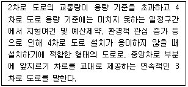
- 맞춤형 도로
- 2+1차로 도로
- 라인마킹화 도로
- 광폭 도로
(정답률: 100%)
110. 다음 중 소도읍의 가로망, 대도시의 지역 가로망 및 교통량이 적은 지방부 도로에 효과적으로 사용될수 있으며, 가장 단순하고 가장 직접적으로 교통사고 다발 지점을 선정하는 기법은?
- 사고건수-율법
- 사고율법
- 율-품질관리법
- 사고건수법
(정답률: 82%)
111. 다음 중 교통사고원인을 분석하면서 교통사고는 충돌 전, 충돌 중, 충돌 후의 세 가지 사고기회의 궤도를 돌파하여야 비로소 사고로 연결된다고 주장한 사람은?
- Reason
- Rumar
- Hauer
- Haddon
(정답률: 73%)
112. 다음 중 사고지점도에 관한 설명으로 옳지 않은 것은?
- 희생자수를 나타내는 것이 일반적이다.
- 상이한 모양, 크기 또는 색채가 사고의 유형이나 정도를 나타내는데 사용된다.
- 범례는 가능한한 단순하여야 한다.
- 사고가 집중적으로 발생하는 지점의 신속한 시각적 색인을 제공한다.
(정답률: 100%)
113. 다음 중 노면이 젖어 있을 때 자동차가 고속으로 주행할 경우 타이어와 노면의 직접적인 접촉이 점차 깨어져 타이어가 노면의 고인 물에 부상하게 되어 타이어 아래에 있는 물의 압력과 타이어에 걸리는 무게가 같게 되고 브레이크도 제대로 작용하지 않게 되는 현상을 무엇이라고 하는가?
- 스탠딩 웨이브(standing wave)
- 하이드로 플래닝(Hydroplaning)
- 스키드(Skid)
- 드리프트(Drift)
(정답률: 88%)
114. 다음 중 차도를 이탈한 차량이 고정 장애물에 직접 충돌하는 것을 막기 위해 차량의 충돌 시 그 속도가 완만하게 줄어들도록 하거나 충돌 후 그 방향이 전환되도록 고안된 안전시설은?
- 과속방지시설
- 시선유도표지
- 가드케이블
- 충격흡수시설
(정답률: 94%)
115. 어느 지역의 교통사고 다발 지점을 개선한 경우 해당 개선지점의 교통사고는 개선 전에 비해 감소하지만, 주변의 다른 지점에서 사고가 발생하는 경우가 있다. 이러한 현상은 다음 중 어떤 요인이 가장 큰 영향을 미치기 때문인가?
- 사고 이동(Accident Migration)
- 평균회귀효과(Regression-to-Mean Effect)
- 위험 보정(Risk Compensation)
- 위험 회피(Threaten Avoidance)
(정답률: 83%)
116. 다음 중 일반적으로 교통약자(vulnerable road user)에 해당되지 않는 사람은?
- 어린이
- 경차 이용자
- 노인
- 임산부
(정답률: 82%)
117. 교통사고의 유발요인을 크게 인적요인, 도로 환경적 요인 및 차량요인으로 구분할 때, 다음 중 차량요인에 해당하는 것은?
- 신호등 고장
- 음주 운전
- 운전 중 핸드폰 통화
- 조향 장치 고장
(정답률: 94%)
118. 다음 중 평면교차로에서의 상충 유형에 해당하지않는 것은?
- 합류상충
- 교차상충
- 병목상충
- 분류상충
(정답률: 93%)
119. 다음 중 아래와 같은 조건을 가진 도로의 교통사고 감소 건수는 얼마인가?
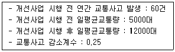
- 25건
- 30건
- 36건
- 41건
(정답률: 82%)
120. 다음 중 방호울타리의 설치 목적으로 옳지 않은 것은?
- 원활한 교통신호제어
- 보행자의 횡단억제
- 보행자의 보호
- 차량 이탈방지
(정답률: 89%)